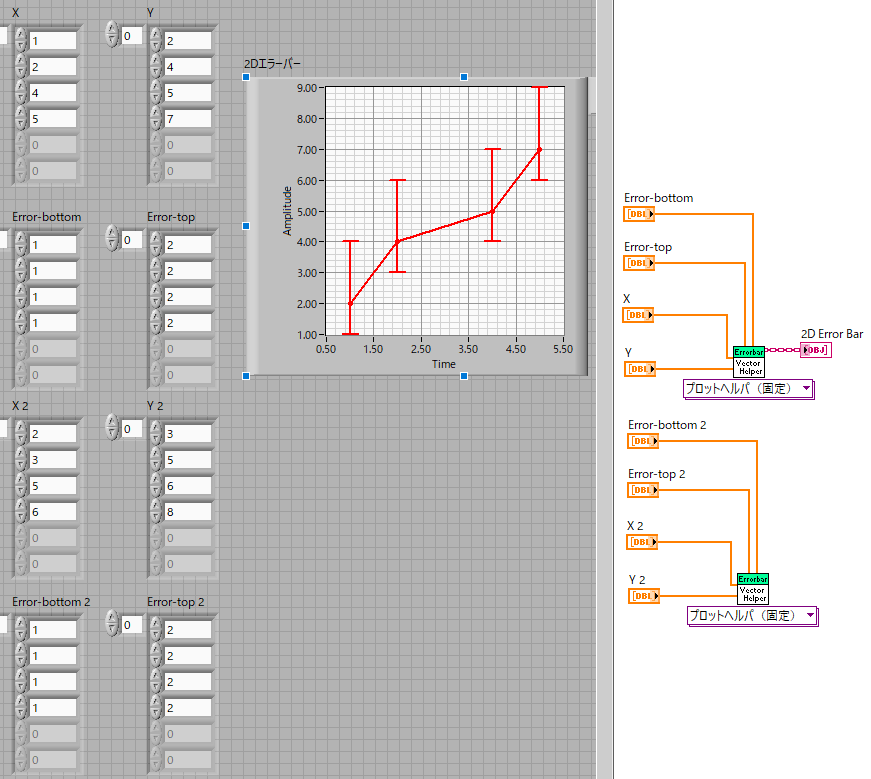
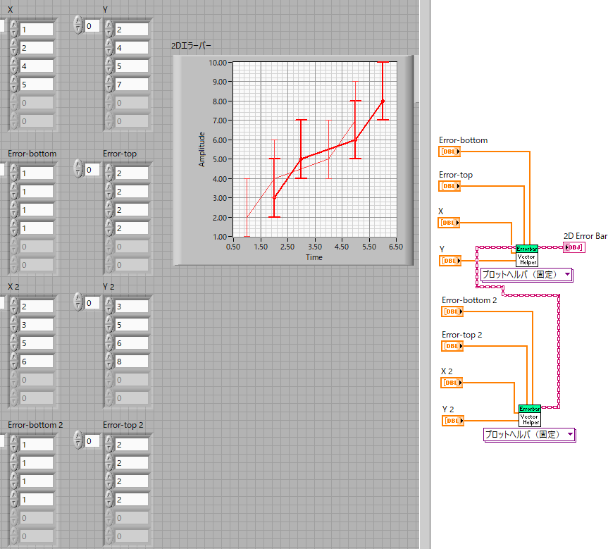
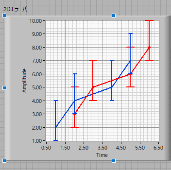

エラーバープロット-02
エラーバープロットをオーバープロットする方法は，今までのグラフとは異なります．
まずは，エラーバープロットのデータをコピペしましょう．新しい方のグラフアイコンは削除しておきます．

元のエラーバープロットアイコンの左側に紫のくさり状の配線用の端子があります． ここに，新しいエラーバープロット右側の端子を接続します．実行すると，

オーバープロットされていることがわかります．あとはデザインをちょっといじって，

見栄えをよくします．